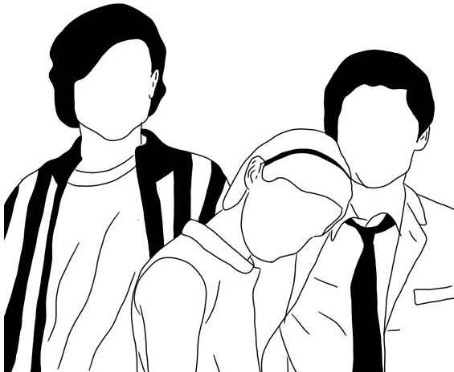

Other reviews:

The Perks of Being a Wallflower: Just some late night thoughts~
Mark L. Dela Cruz Mar 11, 2019“And in that moment, I swear we were infinite.” Have you ever sensed things that gave you the feeling, whether good or bad, to just disappear from the world?
Read More